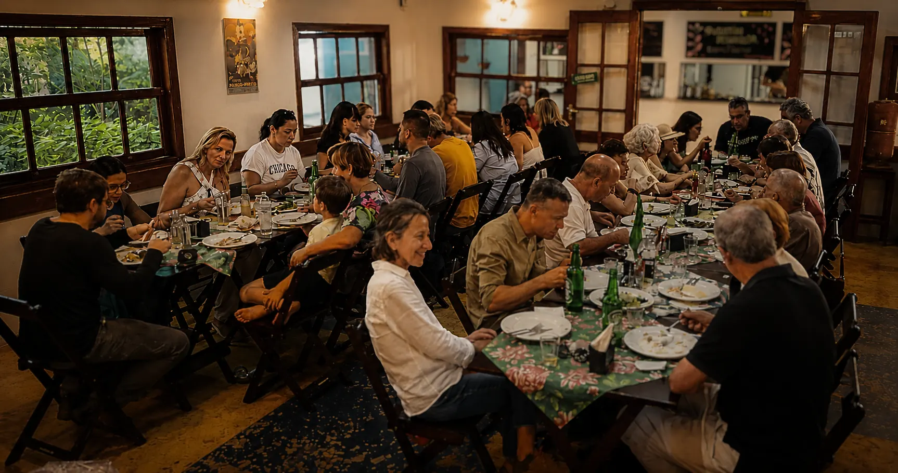

Cozinha caipira contemporânea
Reavivar um passado, conversar com o presente e apontar um futuro.

Cozinhamos a partir daqui
O Tio Dinho parte da cozinha do interior brasileiro — seus ingredientes, sabores, técnicas e histórias — para construir uma cozinha autoral e contemporânea.
O cardápio acompanha o tempo e aquilo que a terra oferece. Produtos agroecológicos, ingredientes brasileiros, fermentações, conservas, fogo e aproveitamento integral aparecem ao lado das técnicas que fomos aprendendo pelo caminho.
Dia após dia, buscamos o caipirismo: aquela chama do mundo caipira que pode brilhar ainda hoje.
Um cardápio vivo
Nossa cozinha muda com a colheita, a estação e o que chega dos produtores. Alguns pratos permanecem. Outros acompanhamentos aparecem, desaparecem e voltam em outro momento.


Livros e comida dividem a mesma mesa
Cada edição parte de uma obra ou de um conjunto de textos para criar um percurso gastronômico. Os pratos se harmonizam com imagens, personagens, atmosferas e ideias da literatura, criando relações entre aquilo que se lê e aquilo que se come.
Cada pessoa recebe um livreto com os textos selecionados e o menu para acompanhar o jantar.


Uma mesa para chamar de sua
O Tio Dinho também recebe aniversários, encontros, pequenas celebrações e jantares particulares.
Podemos servir nosso cardápio, construir um menu para a ocasião ou pensar uma experiência em torno da história que levou aquelas pessoas à mesma mesa.
Pense seu eventoAntes do restaurante, veio o Tio Dinho
Tio Dinho existiu antes do restaurante. Ele era o avô do chef Thiago Basile. Nasceu no interior e partiu para São Paulo, levando consigo sabores, modos de fazer e uma maneira de olhar o mundo.
Décadas depois, o neto fez o caminho inverso. O restaurante nasceu desse reencontro.
Conheça nossa história